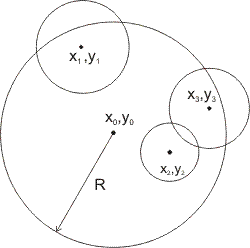

|
Radio Coverage
Description Radio station 'ACM Rock' is broadcasting over the circular area with center in point (x0, y0) and radius R. In order to increase the auditorium, it were suggested to build several relay stations. N locations were selected as candidate sites for relay stations. Relay station placed in i-th location will cover a circular area with center in point (xi, yi) and radius ri, where center lies inside the area covered by the base station, (x0 - xi)2 + (y0 - yi)2 ≤ R2.
Your task is to select a subset of sites for relay stations so that:
Input Input contains integer number N followed by real numbers x0 y0 R, followed by N triples of real numbers xi yi ri.
1 ≤ N ≤ 10, 0 ≤ xi, yi, x0, y0 ≤ 1000, 1 ≤ ri ≤ R ≤ 1000. Output Output should contain a single real number -- the maximal coverage area with the absolute error less than 10−2. Sample Input 1 0 0 10 10 0 10 Sample Output 505.4816 | |||||